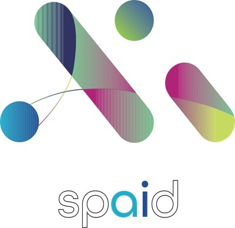

|
Sungmin Kim I'm an undergraduate student double majoring in Digital Media & Applied Artificial Intelligence at Ajou University, Korea. I want to study more deeply in Computer Vision field and eventually create knowledge from my research. |

|
Education
Digital Media & Applied Artificial Intelligence College of Computing and Informatics, Ajou University Mar 2021 ~ Feb 2027 (Expected) |
Research InterestsI'm interested in computer vision, deep learning, super-resolution and image processing. |
Experience

Research Intern at SPAID. Jul 2025 ~ Aug 2025 Prepared Dataset of Architectural facades and Fine-tuned YOLO-seg model Data Labeling on High resolution Image. |
AwardsSmart Railroad Safety Idea Contest using 4th Idustrial Revolution Technology MOLIT, KRRI, KSR, 2017 President of Korea Railroad Research Institute Award (2nd Place) |
Extracurricular EducationMITx: 6.00.1x Introduction to Computer Science and Programming Using Python Stanford Online: CS231N Deep Learning for Computer Vision 2025 Energy New Industry University Education Sharing System COSS: Short-term Education on R |
LanguageKorean: Native English: Proficient (TOEFL 107/120) |